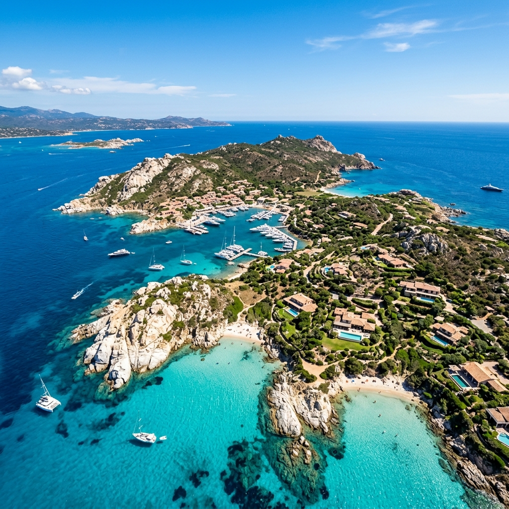
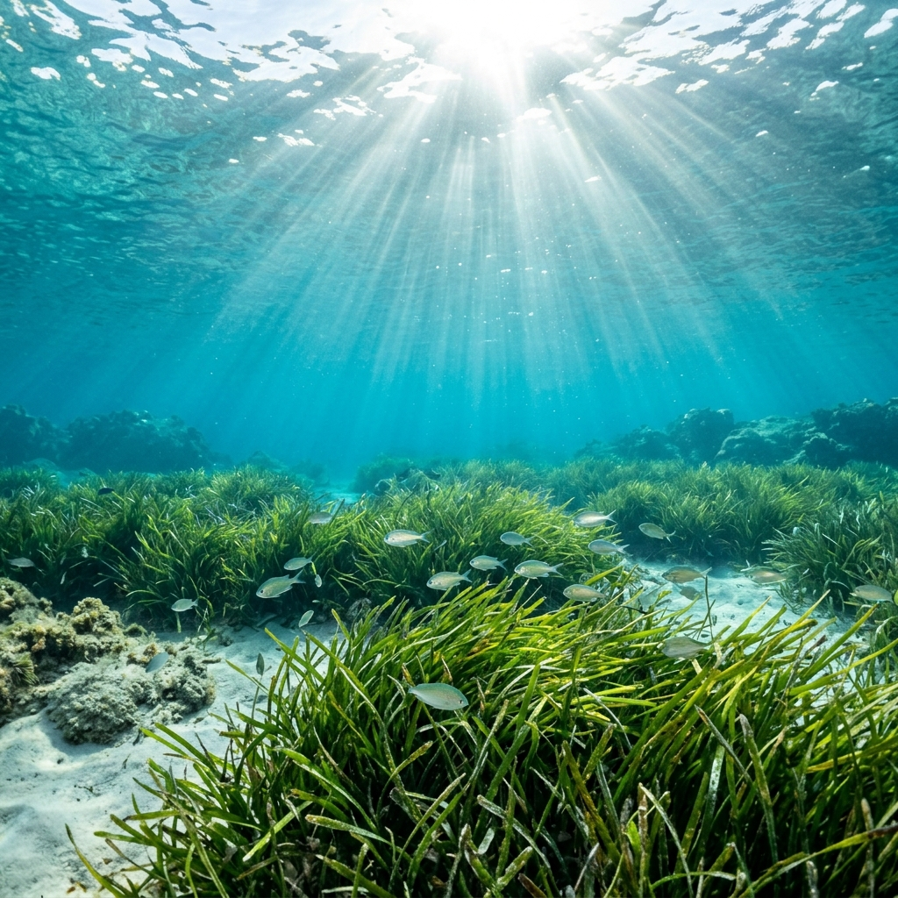
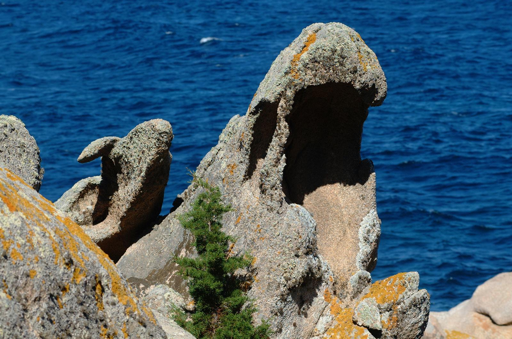
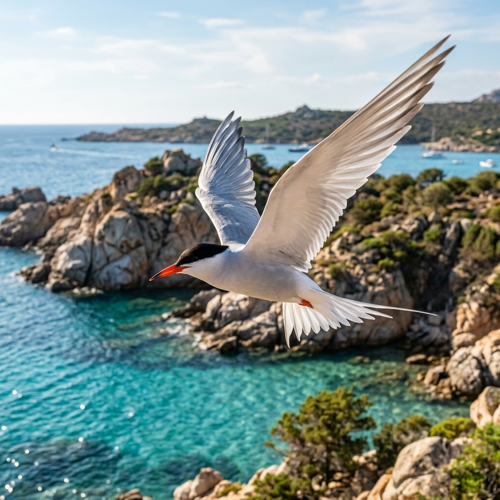

L'engagement d'une communauté unie pour préserver, restaurer et honorer l'un des écosystèmes les plus précieux et fragiles de la Méditerranée.
« L’Île de Cavallo n'est pas une simple destination. C'est un équilibre infini d’une beauté sauvage, sculpté par le vent et préservé par le silence. »
Depuis notre création, notre association rassemble résidents, plaisanciers et passionnés de nature autour d'une mission unique : veiller sur ce joyau de granite posé sur les eaux turquoise de la Corse du Sud. La beauté de notre île n'a d'égal que sa vulnérabilité. Face aux défis environnementaux, nous agissons chaque jour pour mettre en œuvre un modèle pionnier de cohabitation respectueuse de la faune, de la flore et des équilibres marins.
La Charte de Cavallo témoigne de cette volonté de concilier la présence humaine avec la quiétude des écosystèmes. De la gestion éco-responsable des déchets à la préservation des herbiers de Posidonie par des mouillages régulés, chaque geste individuel contribue à perpétuer la majesté de l'archipel des Lavezzi.
DEPUIS 1994 • CORSE
L'APEIC collabore étroitement avec l'Office de l'Environnement de la Corse et la Réserve Naturelle des Bouches de Bonifacio afin de garantir le strict respect des règlementations locales et des équilibres écologiques.

L'herbier de Posidonie est le poumon de notre golfe. En interdisant l'ancrage sauvage dans les zones sensibles, nous protégeons la nursery des espèces marines et luttons activement contre l'érosion des fonds marins.
En savoir plus
Le maquis de Cavallo abrite des espèces végétales protégées adaptées aux conditions arides et venteuses. Nous veillons à limiter l'urbanisation et à réhabiliter la flore naturelle de l'île pour maintenir l'équilibre faunique.
En savoir plus
Protection des oiseaux marins et contrôle de l'espace aérien de l'île. L'APEIC veille à préserver la quiétude des zones de nidification des sternes (rondines de mer) et autres espèces protégées.
En savoir plusDécouvrez nos engagements et les objectifs atteints depuis notre fondation, ainsi que nos visions pour le futur de l'île.
Création de l'association et premières actions d'urgence pour stopper l'exploitation abusive des carrières de granit et préserver le paysage originel.
Opposizione vittoriosa alle modifiche del Piano di Lottizzazione (PAZ), impedendo progetti edilizi speculativi selvaggi.
Recensement complet des zones archéologiques de l'île et identification des sources d'eau douce pour guider la gestion environnementale.
Financement de la première cartographie scientifique des habitats de l'île de Cavallo en collaboration avec le Pr. Paradis.
Consolidation du rôle de Cavallo au sein de la Réserve Naturelle des Bouches de Bonifacio et mise à jour de la cartographie Natura 2000.
Collaboration avec les agences environnementales, cartographie des habitats naturels (Natura 2000) et protection rigoureuse de la faune endémique et des herbiers de Posidonie.
Espansione delle zone di ripristino ecologico, implementazione di tecnologie sostenibili per l'isola e maggiore educazione ambientale per le future generazioni.
Retrouvez les études de terrain, cartographies et rapports scientifiques financés ou co-réalisés par l'APEIC pour la conservation de la biodiversité de l'Île de Cavallo.
Auteur: Prof. Leonardo Filesi (IUAV Venezia)
Synthèse des connaissances naturalistes sur la biodiversité de l'île. Met en avant la présence exceptionnelle de 426 espèces floristiques (371 autochtones) et de l'orchidée rare Gennaria diphylla.
Auteur: BIOTOPE (Florence Delay & Guilhan Paradis)
Inventaire complet et description détaillée des 19 habitats d'intérêt communautaire de l'île, incluant les menaces potentielles liées aux espèces envahissantes comme la Griffe de sorcière.
Auteur: BIOTOPE / APEIC
Atlas contenant les cartes détaillées de localisation et de répartition spatiale des différents biotopes et habitats d'intérêt communautaire sur le territoire de l'île de Cavallo.
Auteur: Conservatoire Botanique National Corse (CBNC)
Compte-rendu de terrain du 12/10/2023, avec relevés détaillés et comptage stationnel des populations d'espèces hautement menacées telles que le Limonium bonifaciense et la Silene velutina.